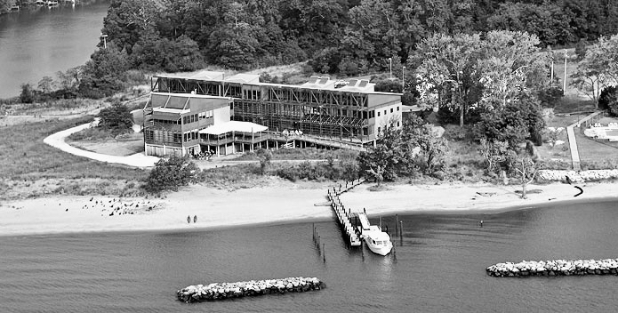

The wedding ceremony and reception will take place at the Philip Merrill Environmental Center, which is a facility of the Chesapeake Bay Foundation in Annapolis, Maryland. The Center was built to provide access to education about the Bay and support CBF's work, however it has also become a popular wedding venue because of its beautiful, peaceful setting on the bay. The cost of using the Center for events goes to support CBF's work saving the Bay through education, advocacy, litigation, and restoration.

Chesapeake Bay Foundation
Philip Merrill Environmental Center
6 Herndon Avenue
Annapolis, MD 21403
The city of Annapolis can be easily reached from multiple airports in the Washington area -- Dulles International Airport (IAD), Baltimore-Washington International Airport (BWI), and Reagan National Airport (DCA). If you are searching on flight consolidation websites, you can use the airport code WAS to find the least expensive routing option.
From BWI or DCA, or from Washington DC and suburbs, it's about a 45 minute drive to Annapolis. From Dulles it's about 1 hour 30 minute drive. Annapolis is located off route 50, which is the primary way for people from the DC area to get to the beaches on the Maryland and Delaware coast. It's before the Chesapeake Bay Bridge, and October is after the peak beach season, but you may still experience some heavier traffic heading east toward Annapolis on Friday or Saturday mornings, and heading west back to DC on Sunday evening. You may also want to avoid traveling to Annapolis during the Friday evening rush hour time period due to commuters leaving DC.
Here are directions to the Philip Merrill Environmental Center.
From Annapolis:
- Take Route 50 West
- Exit onto Aris T. Allen Blvd (Route 665) heading East (Exit 22)
- DO NOT EXIT ONTO RIVA ROAD
- Go approximately 2.8 miles and Aris T. Allen Blvd. becomes Forest Drive
- Go approximately 2.2 miles and Forest Drive becomes Bay Ridge Road
- Go approximately 1.6 miles and turn right on to Herndon Ave. (next to sign for Bay Ridge Community and just past two curved stone walls). GO SLOWLY — Speed limit on Herndon Ave. is 25 mph and is strictly enforced.
- Go approximately .5 miles and turn right at the CBF sign. Proceed down driveway and park in the front parking lot.
From Baltimore:
- Take Route 97 towards Annapolis, then Route 50 East.
- Immediately exit onto Aris T. Allen Blvd. (Route 665) heading East (Exit 22).
- Just after the exit ramp the highway forks. Take the right fork and stay on Aris T. Allen Blvd./665.
- Stay to the left and avoid the Riva Road exit ramp off Aris T. Allen Blvd.
- Go approximately 2.8 miles and Aris T. Allen Blvd. becomes Forest Drive.
- Go approximately 2.2 miles and Forest Drive becomes Bay Ridge Road.
- Go approximately 1.6 miles and turn right on to Herndon Ave. (next to sign for Bay Ridge Community and just past two curved stone walls). GO SLOWLY — Speed limit on Herndon Ave. is 25 mph and is strictly enforced.
- Go approximately .5 miles and turn right at the CBF sign. Proceed down driveway and park in the front parking lot.
From Virginia/Washington, D.C.:
- Take 50/301, then Route 50 East.
- Exit onto Aris T. Allen Blvd. (Route 665) heading East (Exit 22).
- Just after the exit ramp the highway forks. Take the right fork and stay on Aris T. Allen Blvd./665.
- Stay to the left and avoid the Riva Road exit ramp off Aris T. Allen Blvd.
- Go approximately 2.8 miles and Aris T. Allen Blvd. becomes Forest Drive.
- Go approximately 2.2 miles and Forest Drive becomes Bay Ridge Road.
- Go approximately 1.6 miles and turn right on to Herndon Ave. (next to sign for Bay Ridge Community and just past two two curved stone walls). GO SLOWLY — Speed limit on Herndon Ave. is 25 mph and is strictly enforced.
- Go approximately .5 miles and turn right at the CBF sign. Proceed down driveway and park in the front parking lot.
From Maryland's Eastern Shore:
- Go west over the Bay Bridge, then 50 West.
- Exit onto Aris T.Allen Blvd. (Route 665) heading East (Exit 22).
- DO NOT EXIT ONTO RIVA ROAD
- Go approximately 2.8 miles and Aris T. Allen Blvd. becomes Forest Drive.
- Go approximately 2.2 miles and Forest Drive becomes Bay Ridge Road.
- Go approximately 1.6 miles and turn right on to Herndon Ave. (next to sign for Bay Ridge Community and just past two curved stone walls). GO SLOWLY—Speed limit on Herndon Ave. is 25 mph and is strictly enforced.
- Go approximately .5 miles and turn right at the CBF sign. Proceed down driveway and park in the front parking lot.